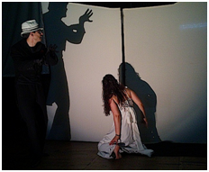

ASTA mostra “Alice” em antestreia
A primeira versão da nova produção da Associação de Teatro e Outras Artes vai ser mostrada sexta-feira.
ASTA - Associação de Teatro e Outras Artes apresenta sexta-feira, dia 23, a peça “Alice”, a sua mais recente produção. A antestreia é às 10h30, no espaço do Cinema do Serra Shopping, na Covilhã. A sessão conta com a presença das crianças do infantário da Santa Casa da Misericórdia da Covilhã.
Alice é um espetáculo infantil com encenação de António Abernú, a partir da obra “A Verdadeira História da Alice”, de Rita Taborda Duarte. Conta com a interpretação dos atores Graça Faustino e José Meira, figurinos a cargo de Sérgio Novo e desenho de luz e operação técnica por João Cantador. A obra “A Verdadeira História da Alice” venceu, em 2003, o prémio Branquinho da Fonseca - Expresso/Gulbenkian e foi selecionada para o plano nacional de leitura do 4º ano do 1º Ciclo.
A mais recente produção da Associação de Teatro e Outras Artes tem também a sua estreia marcada para dia 1 de Junho, Dia Mundial da Criança.
publicado em: quarta-feira, 14 de Maio de 2014